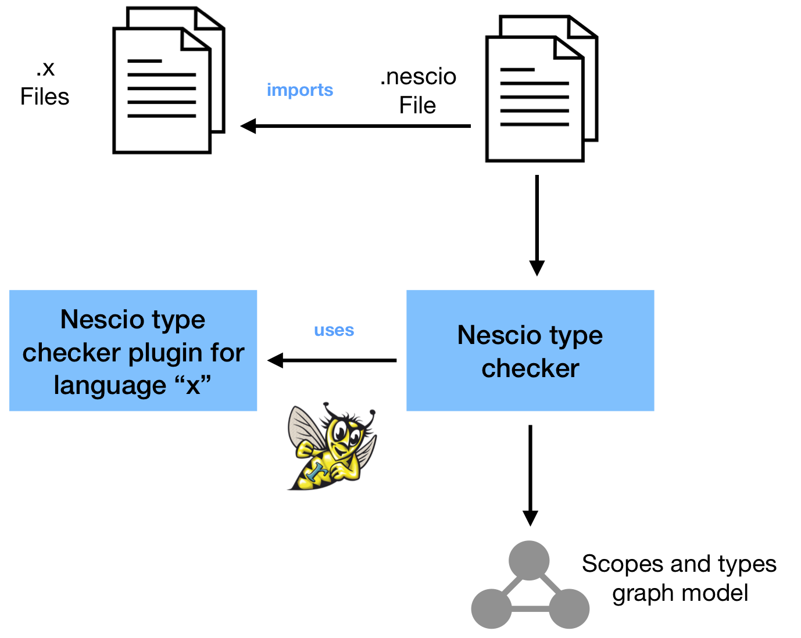

Nescio
With Nescio we can declaratively specify anonymization rules for any data definition language for which a Nescio "bridge" has been developed. How do Nescio anonymization rules look like?
See how the anonymizing transformations are mapped to a Java method in order to support sophisticated behavior. Also, notice the agnostic way of declaring the traversal to the portions of the data that will be anonymized. These patterns resemble XPath-like addressing, but not tied to a particular data definition language.
In fact, in the header of a nescio file one needs to specify in which language the data is described (needless to say, provided that a bridge therefor has been developed). In this case, we assume the data will be parsed using a Bird specification, that we need to import. Check the header of the Nescio module that contains the rule anonymizeDestAddress:
The Nescio project is open source and available at  SWAT-engineering/nescio.
SWAT-engineering/nescio.
The Nescio DSL was designed in order to be integrated with an open-ended set of data description formats. The next diagrams show what are the components that need to be provided in order to allow one particular data description language "x" to generate anonymizers based on Nescio descriptions.

For more information, see the Nescio Language manual